Skip to content
Home
From the temple, 2023
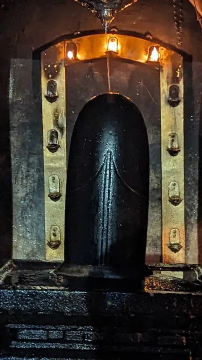
The Linga in the sanctum, December 2023
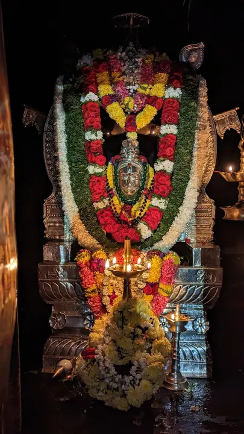
Alankara, January 2023
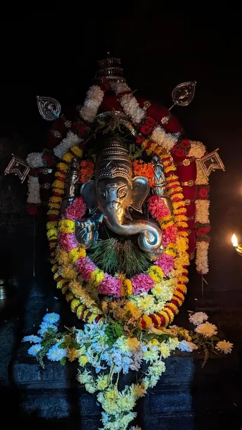
Mahaganapati, January 2023
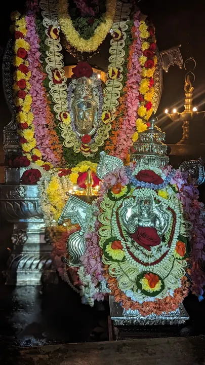
Alankara, December 2023
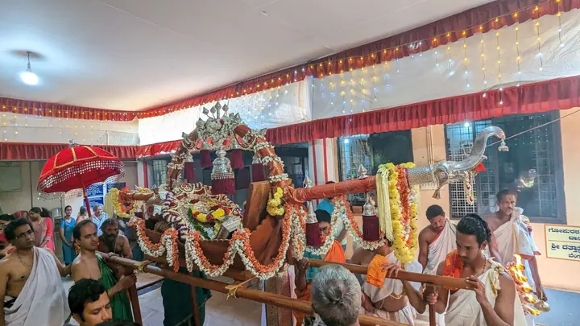
Procession, January 2023
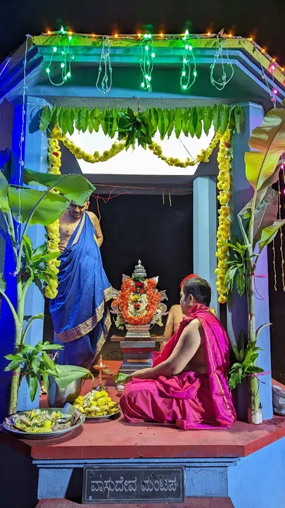
Pooja, December 2023
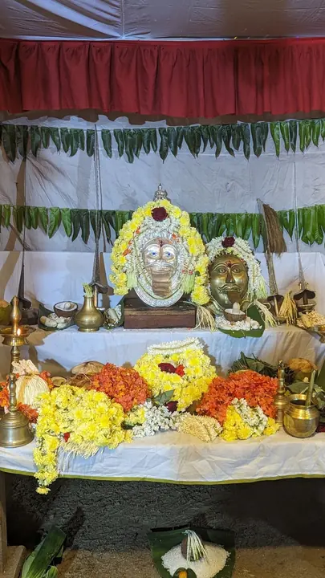
December 2023
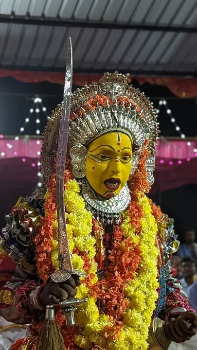
Bhoota Kola, January 2023
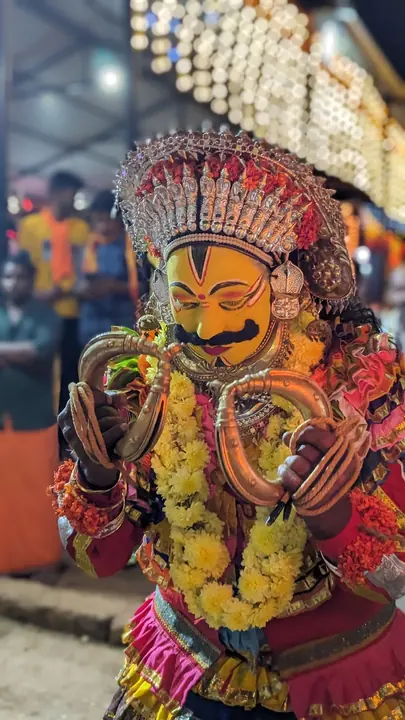
Bhoota Kola, December 2023
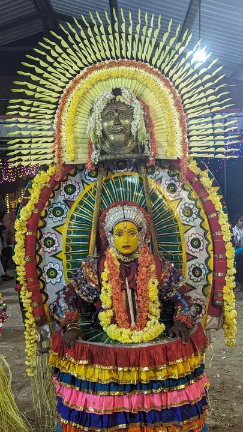
Bhoota Kola, December 2023
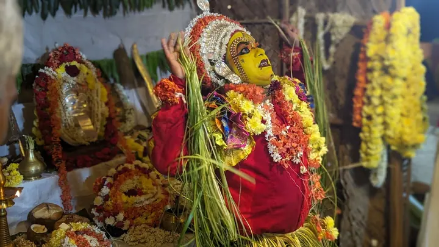
Bhoota Kola, December 2023
From the earlier website
These photographs were on the first nellitheertha.com website. Some are marked © K.B. Mallya.
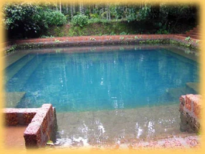
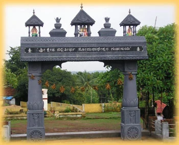
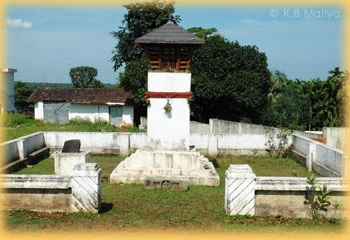
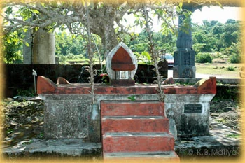
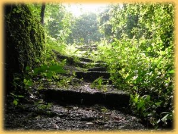
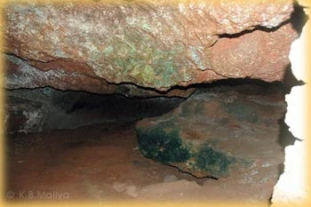
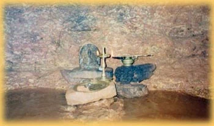
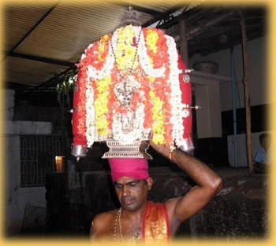
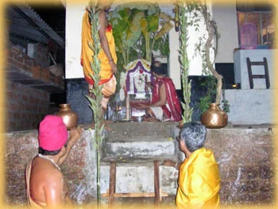
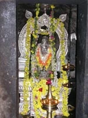
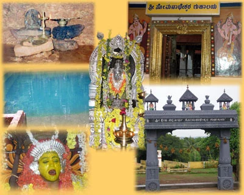